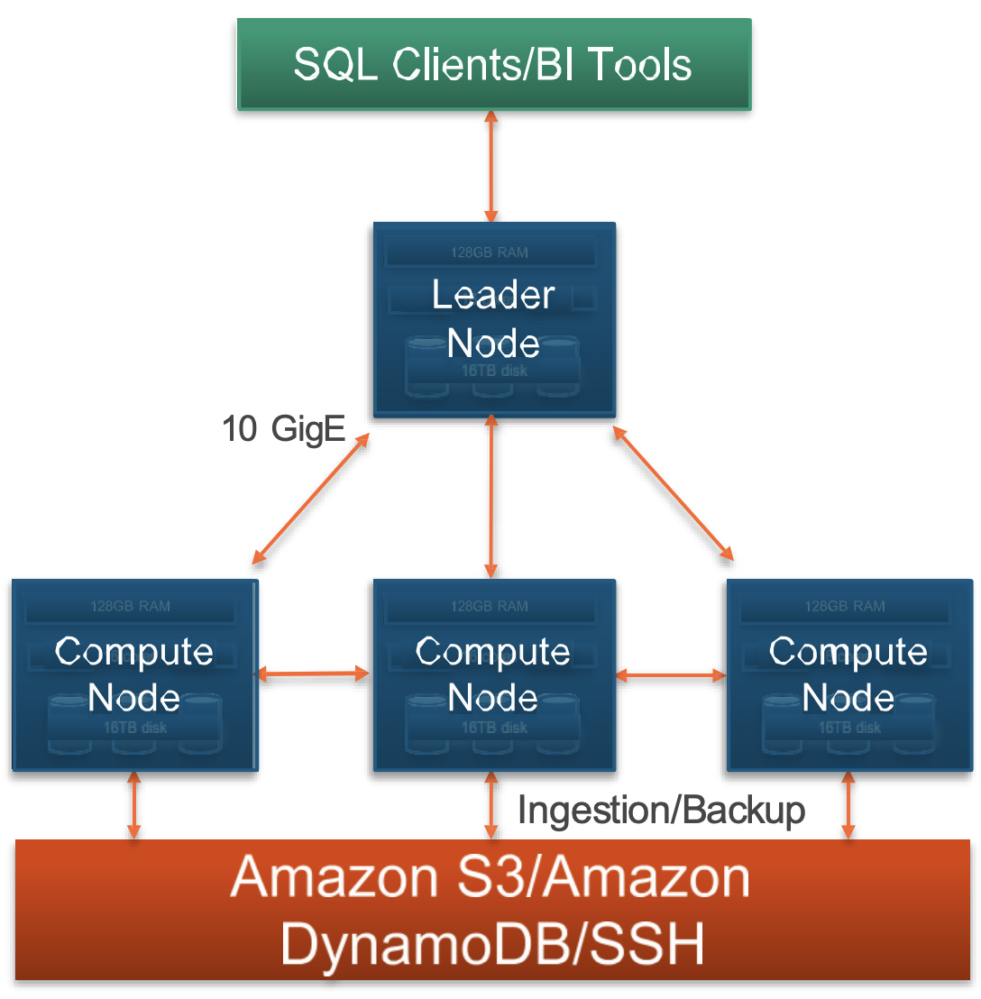
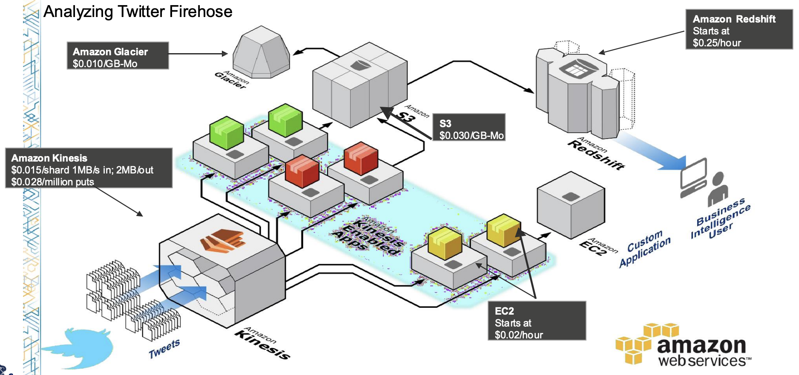
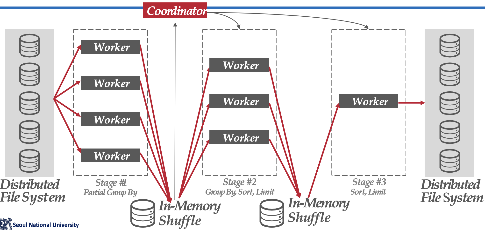

서울대학교 데이터사이언스대학원 정형수 교수님의 "빅데이터 및 지식 관리 시스템 2" 강의를 필기한 내용입니다.
완성되지 않은 강의록
- 사진이랑 보충 설명을 더 넣을 예정입니다.
Cloud-native OLAP
- OLAP 에서는 dimension 에 predicate 을 걸고 여기에 맞는 fact table 의 일부 column 을 스캔한다.
- 이런 scheme 은 star, snowflake 라고 부른다.
- 보통은 ETL 을 이용해 row-oriented 에서 columnar 로 format 을 바꾼다.
- Data lake 는 각종 정형/비정형 데이터를 담는 저장소이고, 여기에 대해 query 를 하는 놈이 Data lakehouse 이댜.
- Data warehouse 에서는 ETL 을 통과한 완성된 데이터를 query 한다.
AWS Redshift
- Postgres 기반으로 개발되어 columnar, parallel processing 에 최적화시켰다고 한다.

- 전체적으로는 leader node 와 compute node 를 나눠서 leader 에서 plan 을 생성하면 그것을 compute node 에 분배해서 분산 처리되도록 하는 구조를 가진다.
- Plan generation 을 할 때는 이 데이터들이 기본적으로 columnar 이기 때문에 각 column 들의 statistics 가 아주 중요하다고 한다.
- 이놈이 빠른 이유는 compressed columnar format 을 이용해 IO 를 줄였기 때문이다.
- 그리고, sorting 을 해서 compression 이 잘먹게 하거나 zone map 을 통해 통째로 skipping 하는 등의 최적화도 많이 들어갔다고 한다.
- 이 점은 용량과 BW 를 적게 사용한다는 점에서 비용 절감도 된다.
- 어떤 데이터를 사용하냐에 따라 다른 compute node 에 분배하여 분산처리한다.
- 즉, 여러 S3 를 사용하고, compute node 마다 담당하는 S3 bucket 이 있어서 query 에 해당하는 compute node 가 처리하게 된다.
- 여러 계층으로 backup 을 하고 6-copy replication 을 하는 등의 fault tolerance 도 지원한다.
Usecase

- 위 그림은 Twitter 에서의 유스케이스이다.
- AWS Kinesis 는 streaming 되며 들어오는 메세지들을 ID 별로 분류 (stream processing) 하고,
- 분류된 것은 여러 EC2 가 columnar 로 변환한다.
- 이 부분은 Kinesis-enabled app 이라고 부르는듯
- 변환된 것은 S3 에 저장, 여기에 있는 것은 나중에 glacier 로 이동된다.
- Redshift 는 이후 이 S3 에 접근해서 OLAP query 을 처리한다.
GG Bigquery / Dremel
- Data lakehouse 처럼 엄청 많은 데이터가 들어있는 저장소에 직접 붙어서 SQL-like query 를 돌리고 싶다가 이 프로젝트의 시작이다.
- 간단한 역사
- MapReduce: Hadoop 처럼 해보자
- BigTable: JOIN 하지 말고 그냥 하나의 table 에 다 퉁치자
- LevelDB: LSM KV 로 해보자
- 등등
- BigQuery 는 Dremel 을 기반으로 구현되어있다
- 첫번째 아이디어는 NDP (CSD 는 아니고 그냥 강력한 storage server) 이고,
- 두번째 아이디어는 정형/비정형 데이터를 하나의 format 으로 통일시켜 통일된 columnar format file 을 처리하자 이며,
- 세번째 아이디어는 이런 애들을 별도로 (disaggregated), 나눠서 (distributed) 저장하고, parallel 하게 vectorized 로 처리하자는 것이다.
- Shared-disk: storage farm 전체는 공유하여 사용
- Disaggregated storage: storage farm 과 compute server 는 (네트워크를 통해) 분리되어 있음
- Distributed: 데이터들은 storage farm 내에서 분산되어 저장되어 있음
Shuffle-basedDistributed Query Execution

- 우선, query plan 에서 각각의 operation 마다 server farm 을 둔다.
- 그래서 query plan 을 실행할 때 각각의 operation 에 맞는 server farm 들이 pipeline 되어 작동한다 (inter operation parallelism).
- 이렇게 각 server farm 을 거치는 것을 각 stage 라고 한다.
- 각 server farm 에서는 하나의 operator 를 parallel 하게 처리한다 (intra operation parallelism).
- 그리고 server farm 내에서는 각 server 들에게 operator 를 shuffling 하여 고르게 분배한다 (load balance).
- 이 shuffling 은 load balancing 을 하여 원활하게 pipeline 이 굴러가도록 하기 위함이다.
- 하나의 stage 가 끝나면, 결과를 뱉고 이 결과는 in-memory 에서 shuffling 해서 새로운 stage 에 대한 worker (server farm) 에게 분배하는 과정이 반복된다.
- 즉, 각 operator 의 producer, consumer 관계에 따라 stage 가 나뉘는 것.
- 다음 stage 의 worker 에게 직접 줄 수도 있다; 양이 적으면 직접 주고 양이 너무 많다면 disk 로 spill 해서 spill 된 데이터의 endpoint 를 통해 다음 stage 의 worker 가 접근하는 것이다.
- 이 모든것은 coordinator 가 조율한다.
- 정리하면, Dremel 에서는 intra-query parallelism 을 하는데,
- 각 operator 마다 server farm 을 할당받고, 그리고 그 operator 들의 producer-consumer 관계로 구분지어지는 stage 들을 pipeline 으로 처리하며, 각 operator 를 담당하는 server farm 내부에서도 각 server 가 distributed 로 처리
- 즉, inter-operator parallelism 은 stage pipeline 으로 구현되고
- intra-operator parallelism 은 operator server farm 내부의 각 server 들이 distirbuted 로 처리하는 것으로 구현된다.
- 이런 것을 multi-level execution tree 라고 말하기도 한다.
Straggler avoidance
- Straggler avoidance: 만약에 처리가 유독 늦는 worker (straggler) 가 있다면, 이놈의 job 을 뺏어서 남는 worker 혹은 일찍 job 을 마친 worker 에게 재분배한다.
Dynamic Query Optimization
- Dremel 은 stage 가 바뀔 때 query plan 을 유동적으로 바꾸기도 한다.
- 그래서 만약 stat 이 없거나 skewness 가 심하는 등의 상황에서 선택한 join 방법이 잘 맞지 않는 경우
- Hash key 를 바꿔서 다시 시작하는 등의 adaptive join 을 사용한다.
- 즉, dynamic reparititioning 하는 것.
- 이러한 것을 dynamic query optimization 이라고도 한다.
- Cloud 와 같은 엄청 많은 machine 을 사용하기 때문에 가능한 얘기다.
- Isolation 이 잘 되어있기 때문에 그냥 다른 자원에 job 을 분배하기만 하면 되기 때문.
- Single machine 에서는 자원이 부족하기 때문에 job 을 재분배하기 위해 취소하면 금방 이 자원을 다른애들이 가져간다.
Cloud-native HTAP
OCP Heatwave
- Oracle 의 Rapid engine 을 MySQL 로 붙인게 Heatwave 이다.
- Rapid engine 은 high-performance in-memory columnar engine 으로,
- Compressed columnar partitioned data 를 parallel 하게 처리하는 것에 최적화되어 있다고 한다.
- MySQL 은 OLTP 엔진이기 때문에, 여기다가 Rapid engine 을 붙여서 OLAP 을 가속화하자는게 아이디어이다.
- 하지만 real time analytics 를 하기 위해 몇백대의 서버가 필요하기 때문에 적자라고 한다.
- 왜냐면 rapid 는 in-memory engine 이기 때문에, data 를 in-memory 에 fit 시키기 위해 아주 많은 서버를 사용하기 때문
- MVCC 는 지원하지 않고, read committed 만 된다고 한다.
IBM DB2 (IDAA, CDC)
- IDAA: IBM DB2 Analytics Accelerator
- CDC: Change Data Capture
- CDC 안에서 table modification 이 되었음을 감지하고, log reader 가 update log 를 streaming 으로 계속 IDAA 에게 쏴주면 여기에서 incremental update 를 하여 지속적으로 columnar data 에 적용시켜주는 구조로 되어 있다고 한다.